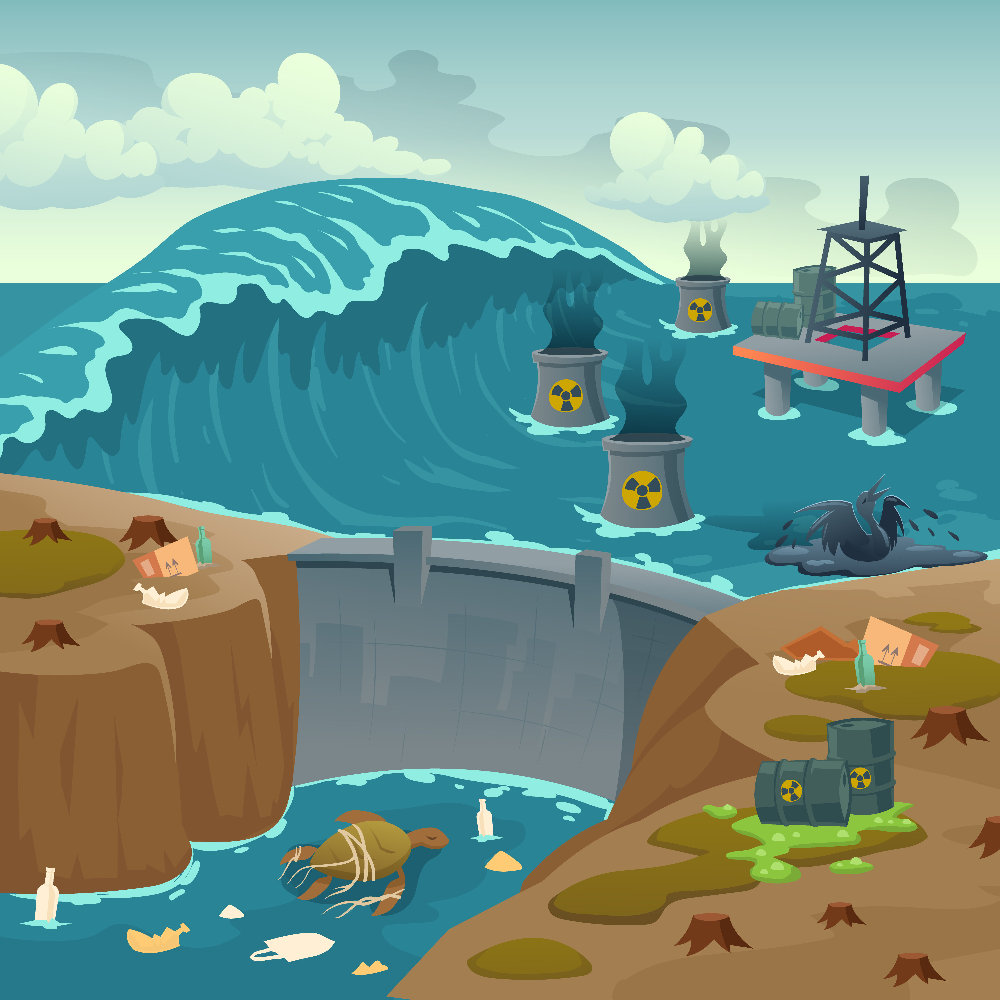
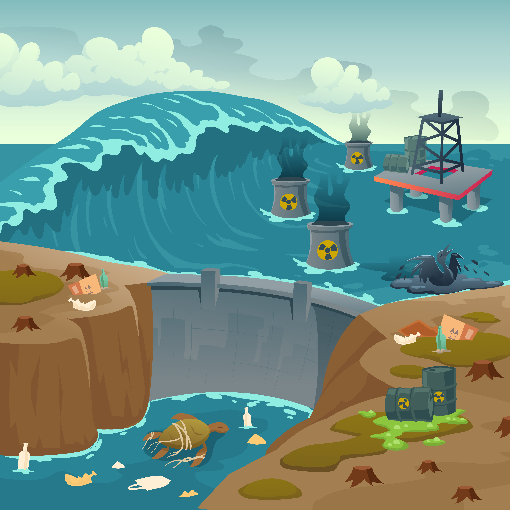

Three million people in the Philippines put their lives at risk every day by using unsafe water sources. Moreover, another 7 million do not have access to improved sanitation and sanitation services.
Billions of pounds of plastic can be found in swirling convergences that make up about 40 percent of the world's ocean surfaces. Thousands of seabirds and sea turtles, seals and other marine mammals are killed each year after ingesting plastic or getting entangled in it.

Fishermen in the Philippines are still overfishing the sea areas around the island country, damaging the marine ecosystem, which in turn is threatening their own survival. Conservation group Oceana said more than 75 percent of the nation's fishing grounds are depleted.
By 2025, aim to eliminate and substantially reducing marine pollution, prioritizing pollution that comes from land-based activities, such as debris and nutrient overload.
By 2020, responsibly manage and safeguard marine and coastal environments to prevent serious harm, including by improving their ability to withstand challenges and taking steps to restore them, so that our oceans can be healthy and productive.
Reduce and deal with the negative effects of ocean acidification, including by strengthening scientific collaboration at all levels.
A national program focused on comprehensively managing, addressing, and effectively reducing the causes and threats of coastal and marine ecosystem degradation, with the goal of achieving and promoting the sustainability of ecosystem services, food security, and climate change resilience for the benefit of present and future generations of Filipinos.
Learn MoreThis program seeks to promote fisheries protection and conservation, underscoring the importance of sustainably managing our fisheries and aquatic resources, and encouraging stakeholder participation in resource protection and conservation initiatives.
Learn MoreInnovaSea developed fish tracking and fish farming products. InnovaSea provides the perfect solutions for aquatic fish farming and aquatic species research.
Upstream Tech developed a smart systems they enables the conserving of freshwater by powering informed water market transactions.
Shellcatch’s mission is to improve the lives of millions of fishermen, connecting them to a sustainable and productive chain of certified ocean products.
Ashored developed product to innovate the commercial fishing industry. The product helps reduce the risk of species getting tangled in fishing nets.
XpertSea developed an AI driven management system. The startup's goal is to defeat the industries biggest challenges.
KnipBio is a company focusing on feeding solutions in aquaculture. The goal is to protect overfished species used for fishmeal and promote the progress of aquaculture.
MonitorFish developed an AI driven health analysis for fish farms provides users with action plans that educate on maintaining the quality of fish.
Seakura developed land based seaweed farming technology in Israel, producing nutrient dense food sustainably without harming the ocean.